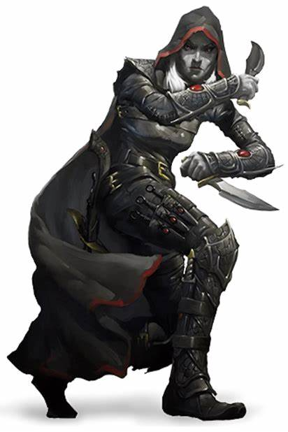

According to Wizards of the Coast, "Rogues devote as much effort to mastering the use of a variety of skills as they do to perfecting their combat abilities, giving them a broad expertise that few other characters can match. Many rogues focus on stealth and deception, while others refine the skills that help them in a dungeon environment, such as climbing, finding and disarming traps, and opening locks."
Rogues are a unique class because everybody is familiar with the sterotype; everybody has heard of the edgy rogue, or the urchin pickpocket. They have a variety of hard-hitting attacks, but operate very well at a distance, and in stealth, to protect themselves from danger and prepares them for well-times critical attacks.
Sneak attack! Rogues can add bonus sneak attack damage if they have advantage!
